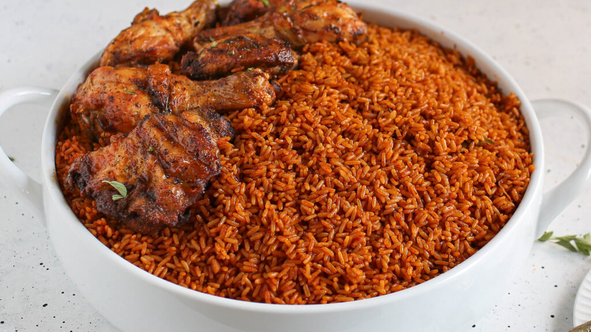

A flavorful West African dish made with rice, tomatoes, peppers, and spices. Popular at parties and family gatherings.
Recipe Information
Prep time: 20 minutes
Cook time: 50 minutes
Servings: 6
Difficulty: Intermediate
Ingredients
3 cups long-grain parboiled rice
1/4 cup vegetable oil
6 large tomatoes (blended)
4 red bell peppers (blended)
2 onions (1 blended, 1 sliced)
2 cloves garlic (minced)
2 tbsp tomato paste
1 tsp thyme
1 tsp curry powder
2 bay leaves
1 liter chicken stock
Salt and pepper to taste
Instructions
Blend tomatoes, bell peppers, and one onion until smooth.
Heat oil in a large pot and fry sliced onions until translucent.
Add garlic, tomato paste, and stir for 2 minutes.
Pour in the blended mixture and cook until it thickens and reduces.
Season with thyme, curry powder, bay leaves, salt, and pepper.
Add chicken stock and bring to a boil.
Stir in washed rice, reduce heat, and cover.
Cook on low heat until rice is soft and sauce is fully absorbed.
Fluff rice with a fork and serve hot.
Tips
For the best flavor, allow the rice to cook on low heat so it absorbs all the spices. Smoky Jollof can be made by letting the rice bottom toast slightly before serving.

Traditional Nigerian Jollof Rice served with fried chicken.